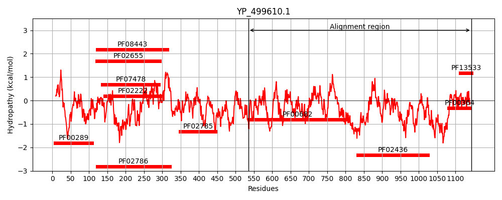
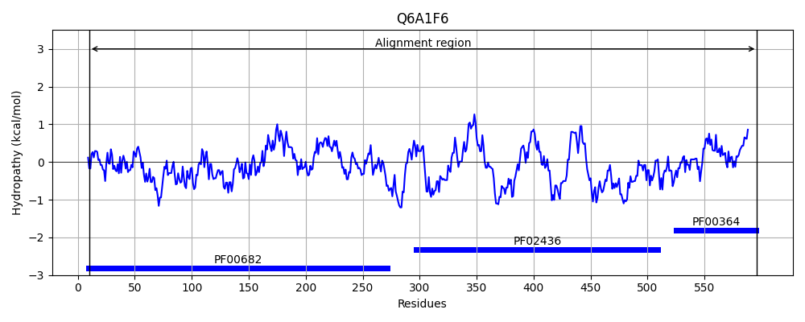
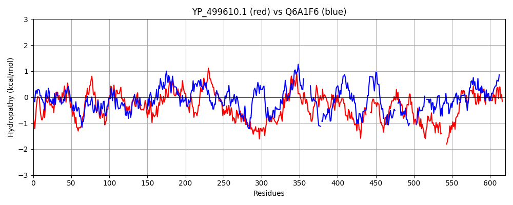

Hit Accession: Q6A1F6
Hit TCID: 3.B.1.1.6
Hit Description: gnl|BL_ORD_ID|14739 gnl|TC-DB|Q6A1F6|3.B.1.1.6 Oxaloacetate decarboxylase OS=Vibrio cholerae GN=oadA-2 PE=1 SV=1
Mach Len: 620
e:0.000000
Query TMS Count : 0
Hit TMS Count: 0
TMS-Overlap Score: 0.000000
Predicted Substrates:CHEBI:9175;sodium(1+)
BLAST Alignment:
Score: 860 , Bit scores: 335 bits, E-value: 1.9e-102, Alignment length: 620, Percentage identity: 34
Query: 535 LTDTTFRDAHQSLLATRVRTKDMINIASKTADVFKDGFSLEMWGGATFDVAYNFLKENPWERLERLRKAIPNVLFQMLLRASNAVGYKNYPDNVIHKFVQESAKAGIDVFRIFDSLNWVDQMKVANEAVQEAGKISEGTICYTGDILNPERSNIYTLEYYVKLAKELEREGFHILAIKDMAGLLKPKAAYELIGELKSAVDLPIHLHTHDTSGNGLLTYKQAIDAGVDIIDTAVASMSGLTSQPSANSLYYALNGFPRHLRTDIEGMESLSHYWSTVRTYYSDFESDIKSPNTEIYQHEMPGGQYSNLSQQAKSLGLGERFDEVKDMYRRVNFLFGDIVKVTPSSKVVGDMALYMVQNDLDEQSVITDGYKLDFPESVVSFFKGEIGQPVNGFNKDLQAVILKGQEALTARPGEYLEPVDFEKVRELLEEEQQGPVTE-----QDIISYVLYPKVYEQYIQTRNQYGNLSLLDTPTFFFGMRNGETVEIEIDKGKRLIIKLETISEPDENGNRTIYYAMNGQARRIYIKDENVHTNA------NVKPKADKSNPSHIGAQMPGSVTEVKVSVGETVKANQPLLITEAMKMETTIQAPFDGVIKQVTVNNGDTIATGDLLI 1143
+TD RDAHQSL ATR+R DM+ IA + + +SLE WGGATFD FL E+PW+RL L++A+PN QMLLR N +GY++Y D+V+ FV+ + K G+DVFR+FD++N V M+ A +AV++ G ++GT+CYT S ++ L+ +V +A++L G +A+KDMAG+L P AA EL+ LK VD+ +HLH H T+G +T +AI+AGVD +DTA++SMSG P+ SL L G DI +E ++ Y+ VR Y FE +K + I ++PGG +N+ Q K ++ D V + RV G + VTP+S++VG A+ V V+ + YK E+ KGE G+ N +LQA +L G EA+T RP + + +L++ ++ +T D+++ L+ +V +++ N++ + P + + T + +K K + + +G TI +N Q+ + + + T+ N P + ++ A + G++ ++ S G+ V LLI EAMKMET I+AP GVI + VN GD + GD L+
Sbjct: 10 VTDVVLRDAHQSLFATRLRIDDMLPIAQQLDQI--GYWSLECWGGATFDSCIRFLGEDPWQRLRLLKQAMPNTPLQMLLRGQNLLGYRHYADDVVDTFVERAVKNGMDVFRVFDAMNDVRNMQQALQAVKKMGAHAQGTLCYT-------TSPVHNLQTWVDVAQQLAELGVDSIALKDMAGILTPYAAEELVSTLKKQVDVELHLHCHSTAGLADMTLLKAIEAGVDRVDTAISSMSGTYGHPATESLVATLQGTGYDTGLDIAKLEQIAAYFRDVRKKYHAFEGMMKGSDARILVAQVPGGMLTNMESQLKQQNALDKLDLVLEEIPRVREELGFLPLVTPTSQIVGTQAVINV--------VLGERYKTITKETS-GVLKGEYGKTPAPVNTELQARVLAGAEAITCRPADLIAAEMPTLQDRVLQQAKEQHITLAENAIDDVLTIALFDQVGWKFLA--NRHNPEAFEPAPQ---AISSACTPKAPTEKSK--------VQPVESHGVYTI--TVNNQSYVVKVDEGGDLTHVAPTASTNHAPVPSAAEGENLAAPLSGNIWKIHASAGDEVAEGDVLLILEAMKMETEIRAPRAGVISAIEVNEGDAVQVGDALL 596 | Protein Hydropathy Plots: |
|---|
|  |  |
Pairwise Alignment-Hydropathy Plot:
|
|---|
|  |